Tournament Information
Saturday (March 21)
Teams arrive at 10:30 AM. Warmups begin at 11:00 AM and matches run until 8:00 PM.
Sunday
Teams arrive at 9:30 AM. Matches begin at 10:00 AM. No warmups due to court availability. Finals begin at 3:00 PM.
Saturday
View Details
- Please arrive at 10:30 AM at Oak Bay Recreation Center (1975 Bee Street, Victoria).
- Warmups begin at 11:00 AM.
- The tournament begins at 12:00 PM.
- Each team will play at least two matches.
- Each match consists of:
- 1 Men's Doubles
- 1 Women's Doubles
- 1 Mixed Doubles
- Matches end at 8:00 PM, followed by a social event (location TBD).
Sunday
View Details
- Please arrive at 9:30 AM at Oak Bay Recreation Center.
- Match play resumes at 10:00 AM.
- No warmups due to court availability.
- Each team will play two matches.
- Each round consists of:
- 1 Men's Singles
- 1 Women's Singles
- 1 Mixed Doubles
- Before finals, teams are ranked according to their records.
Finals
View Details
- Finals begin Sunday at 3:00 PM.
- Final match consists of:
- 1 Men's Singles
- 1 Women's Singles
- 1 Men's Doubles
- 1 Women's Doubles
- 1 Mixed Doubles
- The bronze medal match includes:
- 1 Men's Doubles
- 1 Women's Doubles
- 1 Mixed Doubles
- 5th–7th place will be decided through a round-robin mixed doubles tournament.
- The tournament ends at 5:00 PM Sunday with the trophy ceremony.
Match Format
View Details
Each match is played as an hour-long pro set (first to 8 games) using no-ad scoring.
If the match is unfinished at the end of the hour, the player leading the match is awarded the win.
Each match win earns one point for the team. The two teams with the most points advance to the finals.
If both finalists are from the same school, that school may reshuffle players between teams for the finals and bronze match.
Other teams will compete in a round robin to determine remaining placements.
We are excited to host this year's event and look forward to some great competition. If you have any questions, please contact the UVic team captains or tournament directors.
